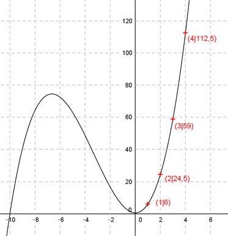

Aufgabe 64 Der Graph einer ganzrationalen Funktion 3. Grades geht durch die Punkte (1|6), (2|24,5), (3|59) und (4|112,5). Wie lautet seine Funktionsgleichung?  Allgemeine Form einer ganzrationalen Funktion 3. Grades: f(x) = ax3 + bx2 + cx + d f’(x) = 3ax2 + 2bx + c f’’(x) = 6ax + 2b 4 Bedingungen: 1. Geht durch den Punkt (1|6) bedeutet: f(1) = 6 --> a * 13 + b * 12 + c * 1 + d = 6 --> a + b + c + d = 6 I 2. Geht durch den Punkt (2|24,5) bedeutet: f(2) = 24,5 --> a * 23 + b * 22 + c * 2 + d = 24,5 --> 8a + 4b + 2c + d = 24,5 II 3. Geht durch den Punkt (3|59) bedeutet: f(3) = 59 --> a * 33 + b * 32 + c * 3 + d = 59 --> 27a + 9b + 3c + d = 59 III 4. Geht durch den Punkt (4|112,5) bedeutet: f(3) = 112,5 --> a * 43 + b * 42 + c * 4 + d = 112,5 --> 64a + 16b + 4c + d = 112,5 IV I * (-1) + II -a - b - c - d = -6 8a + 4b + 2c + d = 24,5 ------------------------ 7a + 3b + c = 18,5 V I * (-1) + III -a - b - c - d = -6 27a + 9b + 3c + d = 59 ------------------------ 26a + 8b + 2c = 53 VI I * (-1) + IV -a - b - c - d = -6 64a + 16b + 4c + d = 112,5 -------------------------- 63a + 15b + 3c = 106,5 VII V * (-2) + VI -14a - 6b - 2c = -37 26a + 8b + 2c = 53 --------------------- 12a + 2b = 16 VIII V * (-3) + VII -21a - 9b - 3c = -55,5 63a + 15b + 3c = 106,5 ----------------------- 42a + 6b = 51 IX VIII * (-3) + IX -36a - 6b = -48 42a + 6b = 51 ---------------- 6a = 3 |:6 a = 0,5 a = 0,5 in VIII eingesetzt: 12 * 0,5 + 2b = 16 6 * 2b = 16 |-6 2b = 10 |:2 b = 5 a = 0,5 und b = 5 in V eingesetzt: 7 * 0,5 + 3 * 5 + c = 18,5 3,5 + 15 + c = 18,5 18,5 + c = 18,5 |-18,5 c = 0 a = 0,5 und b = 5 und c = 0 in I eingesetzt: 0,5 + 5 + d = 6 5,5 + d = 6 |-5,5 d = 0,5 Gesuchte Funktionsgleichung: f(x) = 0,5x3 + 5x2 + 0,5